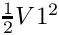
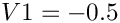
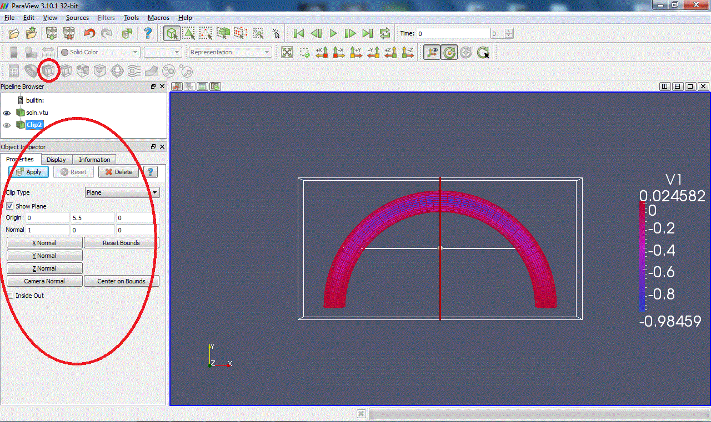
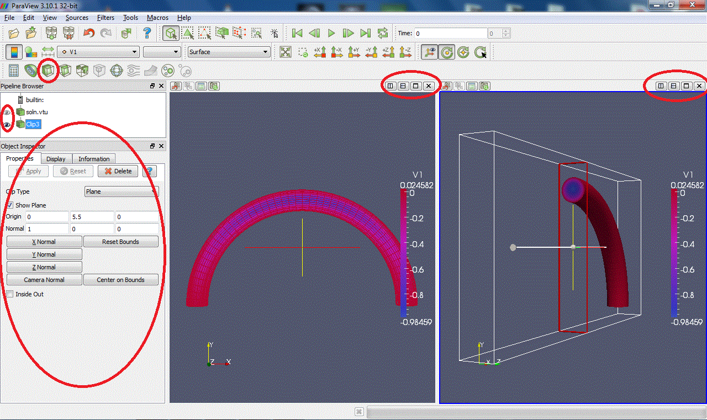
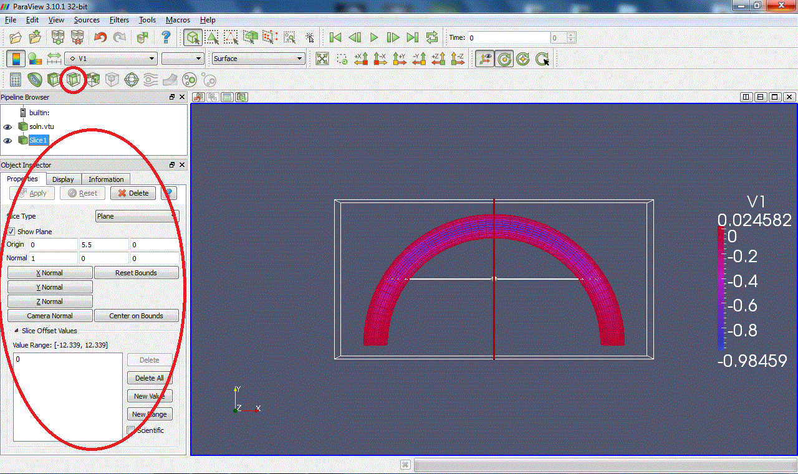
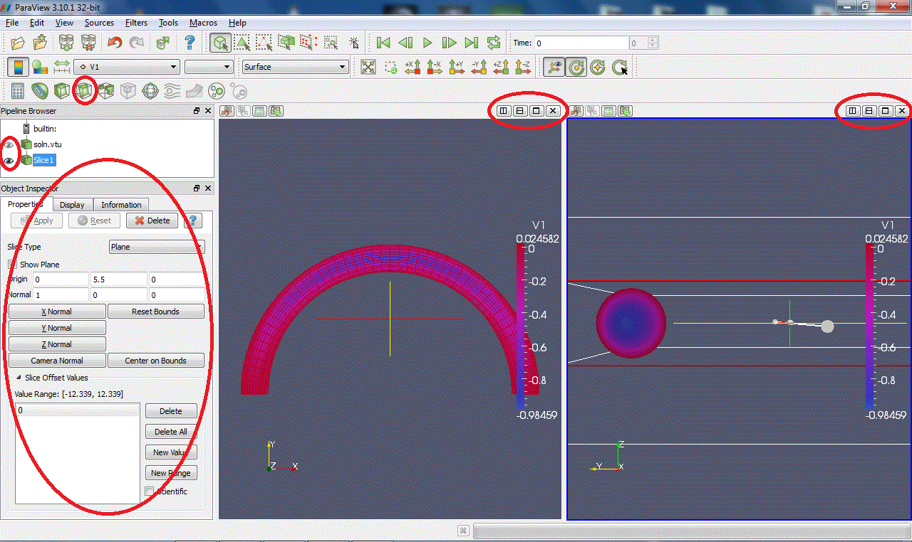
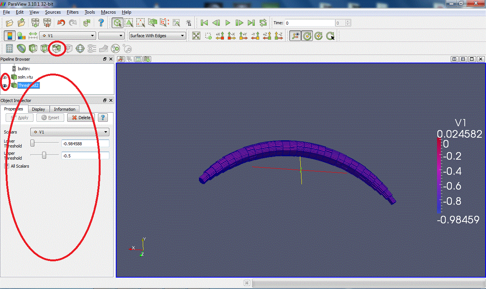

All of oomph-lib's existing elements implement the GeneralisedElement::output(...) functions, allowing the computed solution to be documented via a simple call to the Mesh::output(...) function, e.g.
By default, the output is written in a format that is suitable for displaying the data with tecplot, a powerful and easy-to-use commercial plotting package – possibly a somewhat odd choice for a an open-source library.
We also provide the capability to output data in a format that is suitable for display with paraview, an open-source 3D plotting package. For elements for which the relevant output functions are implemented (they are defined as broken virtual functions in the FiniteElement base class) output files for all the elements in a certain mesh (here the one pointed t by Bulk_mesh_pt) can be written as
where the unsigned integer npts controls the number of plot points per element (just as in the tecplot-based output functions). If npts is set to 2, the solution is output at the elements' vertices. For larger values of npts the solution is sampled at greater number of (equally spaced) plot points within the element – this makes sense for higher-order elements, i.e. elements in which the finite-element solution is not interpolated linearly between the vertex nodes. It is important to note that when displaying such a solution in paraview's "Surface with Edges" mode, the "mesh" that is displayed does not represent the actual finite element mesh but is a finer auxiliary mesh that is created merely to establish the connectivity between the plot points.
Paraview makes it possible to animate sequences of plots from time-dependent simulations. To correctly animate results from temporally adaptive simulations (where the timestep varies) paraview can operate on pvd files which provide a list of filenames and the associated time. These can be written automatically from within oomph-lib, using the functions in the ParaviewHelper namespace:
Once the pvd file is opened, call ParaviewHelper::write_pvd_header(...) to write the header information required by paraview; then add the name of each output file and the value of the associated value of the continuous time, using ParaviewHelper::write_pvd_information(...). When the simulation is complete write the footer information using ParaviewHelper::write_pvd_footer(...), then close to the pvd file.
Currently, the paraview output functions are only implemented for a relatively small number of elements but it is straightforward to implement them for others.
The FAQ contain an entry that discusses how to display oomph-lib's output with gnuplot and how to adjust oomph-lib's output functions to different formats.
Angelo Simone has written a python script that converts oomph-lib's output to the vtu format that can be read by paraview. This has since been improved and extended significantly with input from Alexandre Raczynski and Jeremy van Chu. The conversion script can currently deal with output from meshes that are composed of 2D triangles and quad and 3D brick and tet elements.
The oomph-lib distribution contains three scripts:
bin/oomph-convert.py: The python conversion script itself.
bin/oomph-convert: A shell script wrapper that allows the processing of multiple files.
bin/makePvd: A shell script the creates the*.pvd files required by paraview to produce animations.
The oomph-convert.py script for single files
An example session
- Add
oomph-lib'sbin directory to your path (in the example shown here,oomph-libis installed in the directory/home/mheil/version185/oomph):
biowulf: 10:31:50$ PATH=$PATH:/home/mheil/version185/oomph/bin
- Here is what's in the current directory at the moment:
curved_pipe.datis theoomph-liboutput produced from a simulation of steady flow through a curved pipe.
biowulf: 11:05:10$ lltotal 824-rw-r--r-- 1 mheil users 2292 May 21 09:19 curved_pipe.dat
- Run
oomph-convert.py
biowulf: 11:16:18$ oomph-convert curved_pipe.dat-- Processing curved_pipe.datoomph-convert.py, ver. 20110531Convert from oomph-lib Tecplot format to VTK XML format.Dimension of the problem: 3Plot cells definedField variables = 4Conversion startedCoordinate definedConnectivities definedOffset definedElement types definedField data definedConversion doneOutput file name: curved_pipe.vtu
- We now have the corresponding
*.vtu file
biowulf: 11:32:08$ lltotal 1024-rw-r--r-- 1 mheil users 329874 Jun 21 09:19 curved_pipe.dat-rw-r--r-- 1 mheil users 705294 Jun 21 11:16 curved_pipe.vtu
- ...which we can visualise with paraview:
biowulf: 11:34:08$ paraview --data=curved_pipe.vtu
If your output file is invalid or contains elements that cannot currently be converted, you can use the -p option (followed by 2 or 3 to indicate the spatial dimension of the problem) to extract points only:
The output is now a .vtp data file (Visualization Toolkit Polygonal) which is also supported by Paraview. To display your .vtp data, use the
Glyph filter (displaying the points as crosses, say). Here is a representative plot in which the adaptive solution of a 2D Poisson equation in a fish-shaped domain is displayed with points.

Display your data
Here are a few screenshots from a paraview session to get you started. When paraview starts up, you have to select the arrays of values you want to load and click on
Apply:
Select the array of values you want to display in the active window (V1, V2, V3...). You can only display one at a time. It is applied on the data set selected in the pipeline:
Now choose the plot style of your data. Outline display a box containing the data but not the data itself (it's not entirely clear to us why you would want to do this, but...). Points and Wireframe best suited for 3D computations because they allow you to "see
through" the data set. Surface and Surface With Edges is best suited for 2D computations because only the surface is displayed. Here is a view of the data in Wireframe mode:
You can move the figure with buttons

in the toolbar or simply with the mouse: "Left click + Move" to rotate, "Middle click + Move" to move, zoom in with scroll up or "Right click + Move up" and zoom out with scroll down or "Right click + Move down".
You can also display the colour legend by clicking on
, change the display colours (HSV, RGB, Diverging...) by clicking on
, and rescale the colour scale to data by clicking on

. Modifying the colour scale is easy: add points by clicking on the colour bar to change the distribution of colours or use a logarithmic scale.
You can split a window by clicking on

. Clicking on the plot window will make it active. You can switch on/off the display of a pipeline member by clicking on the eye
on the left. You can display different values and states in different windows:

The oomph-convert and makePvd scripts for multiple files and animations
An example session for data from a serial computation
Here is a quick demonstration of oomph-convert and makePvd scripts in action
- Add
oomph-lib'sbin directory to your path (in the example shown here,oomph-libis installed in the directory/home/mheil/version185/oomph):
biowulf: 10:31:50$ PATH=$PATH:/home/mheil/version185/oomph/bin
- Here is what's in the current directory at the moment:
soln?.datare theoomph-liboutput files that illustrate the progress of the mesh adaptation during the adaptive solution of a Poisson equation in a fish-shaped domain.
biowulf: 11:05:10$ lltotal 824-rw-r--r-- 1 mheil users 2292 May 21 09:19 soln0.dat-rw-r--r-- 1 mheil users 176776 May 21 09:19 soln1.dat-rw-r--r-- 1 mheil users 278117 May 21 09:19 soln2.dat-rw-r--r-- 1 mheil users 367408 May 21 09:19 soln3.dat
- Run
oomph-converton all files (the -z option adds zeroes to the numbers – this is only required if the files are to combined into an animation by paraview)
biowulf: 11:16:13$ oomph-convert -z soln*.dat-- Processing soln0.datoomph-convert.py, ver. 20110615Parse input file for Tecplot zones........done0 lines ignoredWrite nodal coordinates...................doneWrite cell connectivity..................doneWrite cell offsets.......................doneWrite cell types.........................doneWrite field 01/01.........................doneConversion done in 0 secondsOutput file name: soln00000.vtu-- Processing soln1.datoomph-convert.py, ver. 20110615Parse input file for Tecplot zones........done0 lines ignoredWrite nodal coordinates...................doneWrite cell connectivity..................doneWrite cell offsets.......................doneWrite cell types.........................doneWrite field 01/01.........................doneConversion done in 0 secondsOutput file name: soln00001.vtu[further output suppressed]
- We now have the corresponding
*.vtu files
biowulf: 12:37:05$ lltotal 2568-rw-r--r-- 1 mheil users 5979 Jun 21 12:37 soln00000.vtu-rw-r--r-- 1 mheil users 377490 Jun 21 12:37 soln00001.vtu-rw-r--r-- 1 mheil users 592990 Jun 21 12:37 soln00002.vtu-rw-r--r-- 1 mheil users 789325 Jun 21 12:37 soln00003.vtu-rw-r--r-- 1 mheil users 2292 Jun 21 09:19 soln0.dat-rw-r--r-- 1 mheil users 176776 Jun 21 09:19 soln1.dat-rw-r--r-- 1 mheil users 278117 Jun 21 09:19 soln2.dat-rw-r--r-- 1 mheil users 367408 Jun 21 09:19 soln3.dat
These*.vtu files can be displayed individually as discussed above.
- To produce an animation of the results with paraview, create a
*.pvd file usingmakePvd
biowulf: 12:40:56$ makePvd soln mysoln.pvd--> File mysoln.pvd created
- ...and visualise it:
biowulf: 12:42:08$ paraview --data=mysoln.pvd
Screenshots from the paraview session
Here's a screenshot from the paraview session: once the * .pvd file is loaded you can customise the plot style as discussed in the previous example, and then use the
Play/Stop/... buttons to animate the progress of the mesh adaptation.

An example session for data from a parallel computation
oomph-lib typically outputs results from parallel (distributed) computations on a processor-by-processor basis, resulting in filenames of the form
where NPROC is the number of processors. An animation of such data obviously requires the output from different processors (but for the the same timestep) to be combined. Provided, the filenames have the pattern
(note the "proc" and "_", both of which are required), the pvd file can be generated by first processing the files with oomph-convert,
followed by
So, for the files listed above, to produce a pvd file that contains data from a computation with four processors the commands
followed by
would create the file soln.pvd from which paraview can create an animation of the solution.
Data analysis with filters
In order to analyse the data, we can apply filters. Some filters are accessible directly via the navigation bar; a full list is available in the Filters menu:
Here are few examples of filters available:
Calculator:Evaluates a user-defined expression e.g  and creates a new data array, called here "Energy", containing the result of this expression:

Contour:Extracts the points, curves or surfaces where a scalar field is equal to a user-defined value e.g :

Clip:Intersects the geometry with a half space. (Warning: with some versions of Paraview, zooming on the clipped surface can cause the X server to crash.)

Slice:Intersects the geometry with a plane. (Warning: with some versions of Paraview, zooming on the clipped surface can cause the X server to crash.)

Threshold:Extracts cells that lie within a specified range of values

How to ...
Select and extract elements
Click on the button:
Select Cells On to select elements on the surface (2D selection)

Select Points On to select points on the surface (2D selection)
Select Cells Through to select elements through the region selected (3D selection)
Select Points Through to select points through the region selected (3D selection)
When your selection is highlighted, go to Filters->Data Analysis->Extract Selection and
Apply the filter to extract the selected elements. You can now modify or apply filters on the extracted data only.
Here is an example of extraction of the surface elements of the curved pipe data:

PDF file
A pdf version of this document is available.